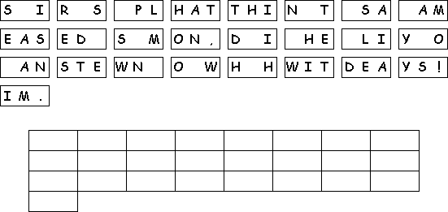
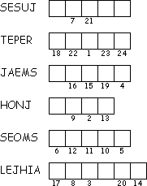
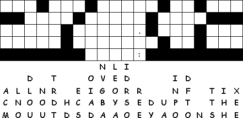

This Week: Exodus 24:12-18, Psalm 2 or Psalm 99, 2 Peter 1:16-21, Matthew 17:1-9
Elementary School Pew-work
Decipher the coded words:
Six
days later
took
 and the brothers
and
with him. They went up on a very high mountain where they could be
alone. There in front of the disciples,
was completely changed. His face was shining like the sun, and his
clothes became white as light. All at once
and
were there talking with
.
So
and the brothers
and
with him. They went up on a very high mountain where they could be
alone. There in front of the disciples,
was completely changed. His face was shining like the sun, and his
clothes became white as light. All at once
and
were there talking with
.
So
 said to him, "Lord, it is good for us to be here! Let us make
three shelters, one for you, one for
,
and one for
."
While
said to him, "Lord, it is good for us to be here! Let us make
three shelters, one for you, one for
,
and one for
."
While
 was still speaking, the shadow of a bright cloud passed over them.
From the cloud a voice said, "This is my own dear Son, and I am
pleased with him. Listen to what he says!"
was still speaking, the shadow of a bright cloud passed over them.
From the cloud a voice said, "This is my own dear Son, and I am
pleased with him. Listen to what he says!"
1.
Who went up on the mountain with
Jesus?
___________________________________________________________________________
2. Who appeared
with Jesus on the
mountaintop?
___________________________________________________________________________
3.
What did the disciples
offer to
do?
___________________________________________________________________________
4.
What did the voice
say from the
sky?
___________________________________________________________________________

Created
by Puzzlemaker
at DiscoveryEducation.com
Next week: Genesis 2:15-17; 3:1-7 , Psalm 32 , Romans 5:12-19 , Matthew 4:1-11
This Week: Exodus 24:12-18, Psalm 2 or Psalm 99, 2 Peter 1:16-21, Matthew 17:1-9
Middle-School Pew-work
What
is the best “mountain top”experience – or, the
worst “valley-of-the-shadow” experience – that
you've ever had?
__________________________________________________________________
_________________________________________________________________________________
_________________________________________________________________________________
_________________________________________________________________________________
_________________________________________________________________________________
_________________________________________________________________________________
_________________________________________________________________________________
|
 |
 |
Created by Puzzlemaker at DiscoveryEducation.com
Next week: Genesis 2:15-17; 3:1-7 , Psalm 32 , Romans 5:12-19 , Matthew 4:1-11